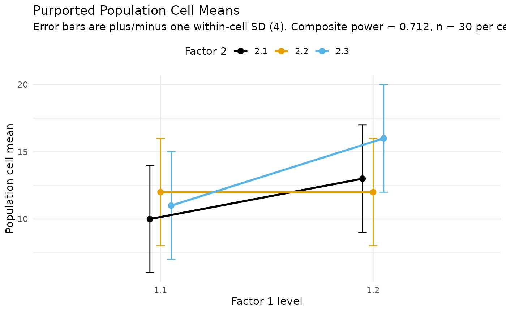

Sample Size or Composite Power for a One-Way or Factorial ANCOVA
Source:R/ss_power_composite_ancova.R
ss_power_composite_ancova.RdDetermine the necessary per-cell sample size to achieve a desired level of
composite statistical power in a balanced analysis of covariance with
\(a\) groups (a one-way design) or a factorial arrangement of factors, or,
given a per-cell sample size, return the realized composite power. Composite
power is the probability that every effect named in effects is
statistically significant in the same study, the quantity a design must be
planned against when its conclusion requires more than one result to hold at
once.
Usage
ss_power_composite_ancova(
factor_levels,
effects,
slopes = c("homogeneous", "heterogeneous"),
means = NULL,
sigma = NULL,
covariate_R2 = 0,
n_covariates = 0,
correlations = NULL,
sd_cov = 1,
desired_power = 0.85,
alpha_level = 0.05,
n_per_cell = NULL
)Arguments
- factor_levels
Integer vector of the number of levels of each factor, one entry per factor (each at least 2). A single value
ais a one-way design with \(a\) groups;c(2, 3)is a 2 by 3 factorial.- effects
A non-empty list naming the effects in the composite. For
slopes = "homogeneous"each element hasfactors(the factor indices the effect spans) and, unlessmeansis supplied, its effect sizeforpartial_eta_squared. Forslopes = "heterogeneous"each element also has atype, one of"mean"(a factorial mean effect, the default),"covariate"(the average slope, spanning no factors), or"slope"(a factor-by-covariate slope heterogeneity). An optionallabelnames the effect. See the forwarded functions for the exact grammar.- slopes
The covariate-slope model,
"homogeneous"(one common slope, the default) or"heterogeneous"(the slope may differ across cells, making the covariate and slope-heterogeneity effects testable).- means
Optional array of population cell means (dimensions
factor_levels, or a vector in array order) from which the mean effects' sizes are read; enables the mean-pattern figure.- sigma
The common within-cell population standard deviation of the outcome, required with the population-values interface.
- covariate_R2
For
slopes = "homogeneous"only: proportion of the outcome's within-cell variance the covariate or covariates explain, in \([0, 1)\), which raises every effect's noncentrality through \(f / \sqrt{1 - R^2}\). Defaults to 0.- n_covariates
For
slopes = "homogeneous"only: number of covariates, each spending one residual degree of freedom. Must be positive whencovariate_R2is. Defaults to 0.- correlations
For
slopes = "heterogeneous"only: optional array of the population covariate-outcome correlation within each cell (dimensionsfactor_levels), which supplies the covariate and slope effects' sizes with the population-values interface.- sd_cov
For
slopes = "heterogeneous"only: population standard deviation of the covariate, the units the slopes and the figure are drawn in. Scale free, so it changes no power. Default 1.- desired_power
Desired composite statistical power (default 0.85). Used only when
n_per_cellisNULL.- alpha_level
Type I error rate for each individual F test (default 0.05), the per-test rate, not a rate for the composite event.
- n_per_cell
Per-cell sample size (balanced); if supplied, the realized composite power is returned rather than a sample size planned.
Value
The data.frame the forwarded planner returns, with term
and value columns and the dmar_ss_power class for
tidy and glance, plus the
dmar_composite_power_factorial (homogeneous) or
dmar_composite_power_factorial_het (heterogeneous) class for
plot(). See ss_power_composite_factorial_ancova for the
row-by-row description.
Details
This is the general entry point for the ANCOVA composite. The two-group
design has its own simpler interface in
ss_power_composite_ancova_2group, stated through a single
smd and one or two correlations; use that when there are exactly two
groups. Use this function for more than two groups or for a factorial design.
With no covariate, name the effects through ss_power_composite_anova
instead.
Homogeneous or heterogeneous slopes. The slopes argument
chooses the model. "homogeneous" (the default) assumes one common
covariate slope across the cells; the covariate is a variance reducer and the
composite is over the factorial mean effects. "heterogeneous" lets the
slope differ across cells, which makes the average covariate slope and the
factor-by-covariate slope heterogeneity into testable effects that can join
the mean effects in the composite. The heterogeneous one-way case is the
\(a\)-group generalization of the two-group ANCOVA composite: a group mean
effect, the covariate effect, and the group-by-covariate slope heterogeneity.
This function is a thin dispatcher. slopes = "homogeneous" forwards to
ss_power_composite_factorial_ancova and
slopes = "heterogeneous" to
ss_power_composite_factorial_ancova_het; see those for the full
method, the exactness discussion, and the shape of the returned object. The
population effects can be stated as effect sizes or as population values
(cell means, and for heterogeneous slopes a covariate-outcome correlation per
cell) with a common within-cell standard deviation, from which the
plot() method draws the population pattern.
References
Maxwell, S. E. (2004). The persistence of underpowered studies in psychological research: Causes, consequences, and remedies. Psychological Methods, 9, 147–163.
Maxwell, S. E., Delaney, H. D., & Kelley, K. (2027). Designing experiments and analyzing data: A model comparison perspective (4th ed.). Routledge. (See Chapter 9 on the analysis of covariance, Chapter 7 on factorial designs, and Chapter 3 on statistical power.)
See also
ss_power_composite_ancova_2group for the two-group
special case with the simple smd/rho interface;
ss_power_composite_anova for the no-covariate design;
ss_power_composite_factorial_ancova and
ss_power_composite_factorial_ancova_het, the planners this
forwards to; ss_power_factorial_ancova for a single effect
Other sample size for power:
power_fisher_exact(),
ss_aipe_mixed_effects(),
ss_aipe_tost_smd(),
ss_power_R2(),
ss_power_R2_sensitivity(),
ss_power_c(),
ss_power_c_ancova(),
ss_power_composite_ancova_2group(),
ss_power_composite_anova(),
ss_power_composite_factorial_ancova(),
ss_power_composite_factorial_ancova_het(),
ss_power_composite_factorial_anova(),
ss_power_composite_sem(),
ss_power_contrast(),
ss_power_equivalence_c(),
ss_power_factorial_ancova(),
ss_power_factorial_anova(),
ss_power_indirect_effect(),
ss_power_mixed_effects(),
ss_power_one_way_anova(),
ss_power_pcm(),
ss_power_r(),
ss_power_rc(),
ss_power_reg_coef(),
ss_power_reg_coef_sensitivity(),
ss_power_rm_anova(),
ss_power_sc(),
ss_power_sem(),
ss_power_smd(),
ss_power_split_plot_anova()
Other composite power:
ss_power_composite_ancova_2group(),
ss_power_composite_anova(),
ss_power_composite_factorial_ancova(),
ss_power_composite_factorial_ancova_het(),
ss_power_composite_factorial_anova(),
ss_power_composite_sem()
Author
Ken Kelley kkelley@nd.edu
Examples
# A four-group (one-way) ANCOVA with heterogeneous slopes: the a-group
# generalization of the two-group composite. The conclusion needs the group
# mean effect, a covariate effect, and evidence that the covariate slope
# differs across the groups, so the design is planned against all three.
ss_power_composite_ancova(
factor_levels = 4, slopes = "heterogeneous",
effects = list(list(type = "mean", factors = 1, f = 0.30),
list(type = "covariate", f = 0.40),
list(type = "slope", factors = 1, f = 0.20)),
desired_power = 0.80)
#> term value
#> necessary_n_per_cell 71
#> necessary_N 284
#> composite_power 0.807
#> residual_df 276
#> power_1 0.994
#> power_covariate 1
#> power_cov_x_1 0.812
#> f_1 0.3
#> f_covariate 0.4
#> f_cov_x_1 0.2
#> df_1 3
#> df_covariate 1
#> df_cov_x_1 3
#> noncentral_parm_1 25.6
#> noncentral_parm_covariate 45.4
#> noncentral_parm_cov_x_1 11.4
#> cells 4
#> alpha_level 0.05
#> desired_power 0.8
# A 2 by 3 factorial ANCOVA with one common slope. Both main effects must
# hold; the covariate explains 25 percent of the within-cell variance.
ss_power_composite_ancova(
factor_levels = c(2, 3),
effects = list(list(factors = 1, f = 0.25),
list(factors = 2, f = 0.20)),
covariate_R2 = 0.25, n_covariates = 1,
desired_power = 0.80)
#> term value
#> necessary_n_per_cell 32
#> necessary_N 192
#> composite_power 0.801
#> residual_df 185
#> power_1 0.978
#> power_2 0.818
#> f_1 0.25
#> f_2 0.2
#> df_1 1
#> df_2 2
#> noncentral_parm_1 16
#> noncentral_parm_2 10.2
#> covariate_R2 0.25
#> n_covariates 1
#> cells 6
#> alpha_level 0.05
#> desired_power 0.8
# The population effects can instead be a full pattern of cell means with a
# common within-cell SD; plot() then draws the mean pattern itself.
cell_means <- matrix(c(10, 12, 11,
13, 12, 16), nrow = 2, byrow = TRUE)
fit <- ss_power_composite_ancova(
factor_levels = c(2, 3), means = cell_means, sigma = 4,
effects = list(list(factors = 1, label = "A"),
list(factors = 2, label = "B")),
n_per_cell = 30)
fit
#> term value
#> specified_n_per_cell 30
#> specified_N 180
#> composite_power 0.712
#> residual_df 174
#> power_A 0.994
#> power_B 0.717
#> f_A 0.333
#> f_B 0.212
#> df_A 1
#> df_B 2
#> noncentral_parm_A 20
#> noncentral_parm_B 8.12
#> covariate_R2 0
#> n_covariates 0
#> cells 6
#> alpha_level 0.05
plot(fit)

# A one-row broom summary of a plan.
generics::tidy(ss_power_composite_ancova(
factor_levels = c(2, 3),
effects = list(list(factors = 1, f = 0.25),
list(factors = 2, f = 0.20)),
desired_power = 0.80))
#> term estimate power
#> 1 sample_size 43 0.8064647
# The two-group case matches the dedicated two-group planner. Here factor 1
# has two levels, so the heterogeneous one-way composite reproduces
# ss_power_composite_ancova_2group with one correlation per group.
ss_power_composite_ancova(
factor_levels = 2, slopes = "heterogeneous",
means = c(0, 0.5), correlations = c(0.1, 0.5), sigma = 1,
effects = list(list(type = "mean", factors = 1),
list(type = "covariate"),
list(type = "slope", factors = 1)),
n_per_cell = 95)
#> Warning: The cell correlations differ in absolute value, so the cells' residual variances differ and the shared-error composite power is an approximation whose error grows with the spread of the correlations. The powers are reported as approximate_* rows, and a planned sample size as approximate_n_per_cell, because neither is exact; confirm a final design by simulation.
#> term value
#> specified_n_per_cell 95
#> specified_N 190
#> approximate_composite_power 0.795
#> residual_df 186
#> approximate_power_1 0.957
#> approximate_power_covariate 0.993
#> approximate_power_cov_x_1 0.837
#> f_1 0.268
#> f_covariate 0.322
#> f_cov_x_1 0.214
#> df_1 1
#> df_covariate 1
#> df_cov_x_1 1
#> noncentral_parm_1 13.6
#> noncentral_parm_covariate 19.7
#> noncentral_parm_cov_x_1 8.74
#> cells 2
#> alpha_level 0.05
ss_power_composite_ancova_2group(smd = 0.5, rho = c(0.1, 0.5), n = 95)
#> Warning: The group correlations differ in absolute value, so the groups' residual variances differ and the shared-error composite power is an approximation whose error grows with the gap between the correlations. The powers are reported as approximate_* rows, and a planned sample size as approximate_n_per_group, because neither is exact; confirm a final design by simulation.
#> term value
#> specified_n_per_group 95
#> specified_N 190
#> approximate_composite_power 0.795
#> residual_df 186
#> approximate_power_group 0.957
#> approximate_power_covariate 0.993
#> approximate_power_group_by_covariate 0.837
#> noncentral_t_parm_group 3.69
#> noncentral_t_parm_covariate 4.43
#> noncentral_t_parm_group_by_covariate 2.96
#> supposed_smd 0.5
#> supposed_rho_group_1 0.1
#> supposed_rho_group_2 0.5
#> sigma 1
#> sd_cov 1
#> alpha_level 0.05
#> tails 2